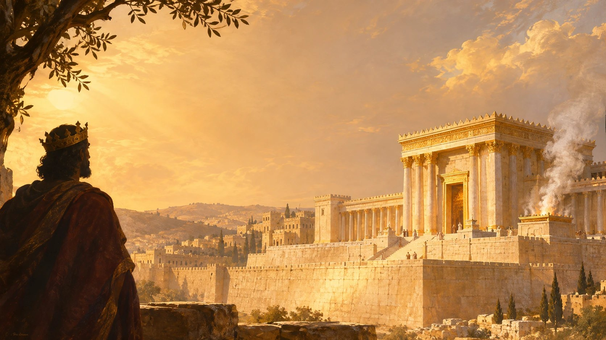

역대하 24장은 성전을 수리한 왕 요아스가 어떻게 하나님을 버리게 되었는지를 전합니다. 어린 시절 성전에서 생명을 보호받고 왕이 되어 성전을 고쳤지만, 제사장 여호야다가 죽은 뒤 하나님의 말씀을 전하는 스가랴를 바로 그 성전 뜰에서 죽이게 됩니다.
핵심 말씀 | 역대하 24:20 “너희가 여호와를 버렸으므로 여호와께서도 너희를 버리셨느니라.”
마음에 남길 한 문장. 하나님께 대한 신실함은 과거에 이루어 놓은 성취만이 아니라, 오늘도 그분의 말씀을 듣고 응답하는 삶에서 드러납니다.
본문을 깊이 읽기
성전에서 살아남은 어린 왕
유다 왕 요아스의 이야기는 한 아이가 죽음의 위기에서 살아남는 사건으로 시작됩니다.
아하시야 왕이 죽은 뒤, 그의 어머니 아달랴는 왕권을 장악하기 위해 왕족을 제거했습니다. 다윗 왕조의 계승이 끊어질 수도 있는 위기였습니다. 그러나 아하시야의 어린 아들 요아스는 여호사브앗의 도움으로 구출되어 성전 안에 숨겨졌습니다. 제사장 여호야다는 그를 보호했고, 때가 되었을 때 요아스를 왕으로 세웠습니다(역대하 22–23장).
요아스에게 성전은 특별한 장소였습니다. 그곳은 어린 생명이 보호받은 곳이었고, 다윗 왕조의 계승이 이어진 곳이었습니다. 또한 그를 지켜 준 여호야다의 신앙적 지도 아래 왕으로 성장한 자리이기도 했습니다.
요아스는 일곱 살에 왕이 되어 예루살렘에서 사십 년 동안 다스렸습니다. 성경은 그의 통치 초기 모습을 긍정적으로 평가합니다.
그러나 그 평가에는 주목할 만한 한 가지 조건이 붙어 있습니다.
요아스가 제사장 여호야다가 살아 있는 동안 여호와 보시기에 정직하게 행했다는 것입니다(24:2).
이 말씀은 요아스가 처음부터 거짓된 믿음을 가진 사람이었다는 뜻이 아닙니다. 성경은 그의 초기 통치를 실제로 긍정적으로 평가합니다. 다만 그 신실함이 끝까지 지속되지 않았다는 사실을 이야기의 시작부터 암시합니다.
요아스의 삶은 하나님의 은혜로 시작되었습니다. 그러나 그 은혜를 경험한 사람이 이후에도 하나님께 충실하게 살아가는 것은 또 다른 문제였습니다.
무너진 성전을 다시 세우다
왕이 된 요아스가 추진한 중요한 사업 가운데 하나는 성전을 수리하는 일이었습니다.
당시 성전은 제대로 관리되지 못했고, 아달랴의 아들들이 성전을 훼손하여 성전의 물건들을 바알들을 위해 사용하기까지 했습니다(24:7).
요아스는 무너지고 훼손된 성전을 회복하려 했습니다.
그는 제사장들과 레위 사람들에게 성전 수리를 위한 재정을 모으도록 지시했습니다. 처음에는 일이 신속하게 진행되지 않았지만, 왕은 수납함을 마련하고 백성이 성전 수리에 참여하도록 했습니다. 유다의 지도자들과 백성은 기꺼이 예물을 가져왔고, 모인 재정은 성전을 수리하는 데 사용되었습니다.
마침내 성전은 회복되었고, 남은 재정으로 예배에 필요한 기구들도 제작되었습니다. 여호야다가 살아 있는 동안 성전에서는 번제가 계속 드려졌습니다(24:4–14).
이것은 분명히 의미 있는 개혁이었습니다.
성전 수리는 단순히 낡은 건물을 고치는 일이 아니었습니다. 하나님을 예배하는 공동체의 중심을 회복하고, 무너졌던 예배의 질서를 다시 세우는 일이었습니다.
그러나 여기에서 역대기 저자는 독자가 오래 기억해야 할 질문 하나를 남깁니다.
성전을 회복하는 일과 성전의 주인이신 하나님께 충실한 일은 언제나 같은 것일까요?
요아스는 성전을 수리했습니다. 그러나 성전을 수리한 일이 그의 남은 생애까지 하나님께 대한 충성을 보장하지는 않았습니다.
건물은 회복되었지만, 왕의 삶에는 앞으로 더 중요한 시험이 기다리고 있었습니다.
여호야다가 떠난 뒤
요아스의 통치에서 결정적인 전환점은 제사장 여호야다의 죽음이었습니다.
여호야다는 백삼십 세에 세상을 떠났습니다. 그는 왕이 아니었지만 다윗성에서 왕들과 함께 장사되었습니다. 성경은 그가 이스라엘과 하나님과 하나님의 성전을 위하여 선을 행했기 때문이라고 설명합니다(24:15–16).
여호야다가 죽은 뒤 유다의 방백들이 요아스 왕을 찾아와 절했습니다. 왕은 그들의 말을 들었습니다.
본문은 방백들이 정확히 어떤 말을 했는지 기록하지 않습니다. 그러나 그들의 영향 아래 요아스와 유다 지도자들이 어떤 길을 선택했는지는 분명하게 보여 줍니다.
그들은 여호와의 성전을 버리고 아세라 목상과 우상들을 섬겼습니다(24:17–18).
이 변화는 놀랍습니다.
한때 성전을 회복하기 위해 백성의 참여를 이끌었던 왕이 이제는 하나님을 버리는 일에 동참하고 있습니다. 여호야다의 지도를 받으며 올바르게 행했던 왕이 여호야다가 죽은 뒤에는 다른 지도자들의 말을 따르고 있습니다.
그렇다고 요아스가 처음부터 마음에 믿음이 없었다거나, 오직 여호야다의 눈치를 보며 행동했다고 단정할 수는 없습니다. 본문은 그의 과거 내면을 그렇게 설명하지 않습니다.
성경이 분명하게 보여 주는 것은 그의 선택이 달라졌다는 사실입니다.
요아스는 하나님을 예배하는 공간을 회복했지만, 정작 하나님께 대한 충성은 지키지 못했습니다.
역대하 24장은 여기에서 신앙의 중요한 문제를 드러냅니다.
과거에 올바른 일을 했다는 사실과 지금도 하나님의 말씀에 충실하게 응답하고 있다는 사실은 동일하지 않습니다.
신실함은 한 번의 성취로 완성되는 것이 아니라, 계속해서 하나님 앞에서 선택하고 응답하는 삶 속에서 드러납니다.
하나님은 먼저 선지자들을 보내셨습니다
요아스와 유다 지도자들이 하나님을 버렸을 때, 하나님께서는 곧바로 그들의 이야기를 끝내지 않으셨습니다.
하나님은 선지자들을 보내 백성이 다시 돌아오도록 경고하셨습니다.
그러나 그들은 듣지 않았습니다(24:19).
이 짧은 기록은 매우 중요합니다.
역대하 24장은 단순히 하나님을 버린 백성이 심판을 받았다는 이야기만을 전하지 않습니다. 그 심판에 앞서 하나님께서 돌아오라고 말씀하셨다는 사실도 함께 보여 줍니다.
하나님의 경고는 백성이 자신들의 잘못을 깨닫고 돌아설 기회였습니다.
그런데 그들은 말씀을 거부했습니다.
마침내 하나님께서는 제사장 여호야다의 아들 스가랴를 통해 말씀하셨습니다.
성경은 이 장면을 특별한 표현으로 묘사합니다.
하나님의 영이 스가랴에게 임하셨다는 것입니다.
히브리어 원문의 표현을 직역에 가깝게 옮기면 ‘하나님의 영이 스가랴를 입으셨다’는 뜻입니다.
일반적으로 사람이 옷을 입지만, 이 표현에서는 하나님의 영이 사람을 입으시는 것으로 묘사됩니다. 하나님의 영께서 스가랴에게 임하여 말씀을 선포하게 하셨다는 강렬한 표현입니다.
그러므로 스가랴의 책망은 단순히 왕의 정책에 반대하는 개인적인 의견이 아니었습니다. 역대기 저자는 그가 하나님의 영에 의해 말씀을 전하는 사람임을 분명하게 밝힙니다.
스가랴는 백성 앞에 서서 물었습니다.
어찌하여 하나님의 명령을 거역하여 스스로 형통하지 못하게 하느냐는 것이었습니다.
그리고 선언했습니다.
“너희가 여호와를 버렸으므로 여호와께서도 너희를 버리셨느니라.”
여기에서 ‘버리다’라는 히브리어 동사가 반복됩니다.
사람들이 하나님을 버렸고, 그 결과 하나님께서도 그들을 버리셨다는 것입니다.
이 말씀은 하나님께서 더 이상 존재하지 않으신다거나, 그들의 행동을 알지 못하신다는 뜻이 아닙니다. 하나님을 저버린 백성이 하나님의 보호를 당연하게 기대할 수 없는 언약적 심판의 상황에 놓였다는 의미입니다.
스가랴는 백성이 듣고 싶어 하는 말을 전하지 않았습니다.
그가 전한 것은 그들이 들어야 할 하나님의 말씀이었습니다.
자신을 살린 사람의 아들을 죽이다
요아스는 스가랴의 책망을 받아들이지 않았습니다.
오히려 사람들은 왕의 명령에 따라 스가랴를 성전 뜰에서 돌로 쳐 죽였습니다(24:21).
이 장면은 역대하 24장 전체에서 가장 비극적인 순간입니다.
요아스는 어린 시절 성전에서 생명을 보호받았습니다. 이후 왕이 되어 그 성전을 수리했습니다. 그러나 이제는 바로 그 성전 뜰에서 하나님의 말씀을 전하는 사람을 죽이도록 명령했습니다.
그의 삶에서 성전의 의미가 완전히 뒤집힌 것입니다.
한때 성전은 그를 보호한 장소였지만, 이제는 그의 명령으로 무고한 사람의 피가 흘려지는 장소가 되었습니다.
더욱 비극적인 사실이 있습니다.
스가랴는 여호야다의 아들이었습니다.
여호야다는 요아스의 생명을 보호했고, 그를 왕으로 세웠으며, 오랜 세월 신앙적으로 지도했던 사람이었습니다.
그런데 요아스는 자신에게 그토록 큰 은혜를 베푼 사람의 아들을 죽였습니다.
성경은 이 사건을 다음과 같이 평가합니다.
요아스 왕이 스가랴의 아버지 여호야다가 베푼 은혜를 기억하지 않았다는 것입니다(24:22).
여기에서 ‘은혜’로 번역된 히브리어는 헤세드(חֶסֶד)입니다. 이 문맥에서는 여호야다가 요아스에게 베푼 신실한 호의와 인애를 가리킵니다.
요아스가 은혜를 기억하지 않았다는 것은 단순히 오래전 일을 잊어버렸다는 뜻이 아닙니다.
그는 자신이 받은 은혜에 정면으로 반하는 행동을 했습니다.
하나님께 대한 배반과 자신에게 은혜를 베푼 사람에 대한 배신이 하나의 사건에서 만났습니다.
스가랴는 죽어 가면서 자신의 억울함을 하나님께 맡겼습니다.
“여호와께서 감찰하시고 신원하여 주옵소서.”
그는 자신을 죽인 사람들에게 직접 복수하겠다고 선언하지 않았습니다. 불의한 살인에 대한 판단과 책임을 하나님께 맡겼습니다.
왕은 선지자의 생명을 빼앗을 수 있었습니다.
그러나 하나님의 말씀까지 없앨 수는 없었습니다.
왕들의 묘실에 들어가지 못한 왕
스가랴가 죽은 뒤 요아스의 통치는 비극적인 결말을 향해 나아갑니다.
그해가 지난 뒤 아람 군대가 유다를 공격했습니다.
역대기 저자는 상대적으로 적은 수의 아람 군대가 유다의 큰 군대를 무너뜨렸다고 기록하며, 그 이유를 유다가 하나님을 버렸기 때문이라고 설명합니다(24:23–24).
이것은 역대기 저자가 요아스의 몰락을 해석하는 신학적 관점입니다. 물론 이 사건을 근거로 오늘날의 모든 전쟁이나 재난을 누군가의 불순종에 대한 직접적인 형벌이라고 판단할 수는 없습니다.
본문은 요아스와 유다 공동체의 특정한 역사적 사건을 하나님의 심판으로 설명하고 있습니다.
아람 군대가 물러간 뒤 요아스는 큰 부상을 입은 상태였습니다. 그때 그의 신하들이 반역하여 그를 죽였습니다.
역대기 저자는 이 죽음을 여호야다의 아들들의 피에 대한 책임과 연결합니다(24:25). 다만 신하들이 가졌던 구체적인 정치적 동기까지 모두 설명하지는 않습니다.
요아스는 다윗성에 묻혔지만 왕들의 묘실에는 장사되지 못했습니다.
여기에서 역대기 저자가 보여 주는 또 하나의 대조가 완성됩니다.
여호야다는 왕이 아니었지만 왕들과 함께 장사되었습니다.
반대로 요아스는 왕이었지만 왕들의 묘실에는 들어가지 못했습니다.
왕의 신분을 가졌다는 사실이 하나님 앞에서 그의 삶을 정당화해 주지는 못했습니다.
역대기는 두 사람의 장례를 대조하면서, 한 사람의 삶을 평가하는 중요한 기준이 지위나 업적 자체가 아니라 하나님과 그분의 말씀에 대한 신실함임을 드러냅니다.
성전을 고친 손과 말씀을 거부한 마음
요아스의 이야기를 읽을 때 주의해야 할 점이 있습니다.
이 본문은 성전을 수리한 일이 잘못되었다고 말하지 않습니다. 오히려 요아스의 초기 성전 개혁을 실제로 의미 있는 성과로 기록합니다.
문제는 그가 과거에 선한 일을 했음에도 불구하고 이후 하나님의 말씀을 버렸다는 데 있습니다.
성전 수리는 필요하고 중요한 일이었습니다. 그러나 성전을 수리했다는 사실이 하나님의 말씀을 듣고 순종하는 삶을 대신할 수는 없었습니다.
그는 하나님을 예배하는 장소를 회복했지만, 하나님께서 보내신 선지자의 말씀을 거부했습니다.
그는 성전의 무너진 부분을 고쳤지만, 자신이 받은 은혜를 기억하며 살아가는 데에는 실패했습니다.
이러한 모순은 요아스 개인의 이야기로만 끝나지 않습니다.
하나님의 백성은 과거에 무엇을 이루었는지만이 아니라, 지금 하나님의 말씀에 어떻게 응답하고 있는지를 계속해서 돌아보아야 합니다.
하나님께 드리는 예배와 신앙적 활동은 소중합니다. 그러나 그것들이 하나님의 말씀을 듣는 일과 분리될 때, 신앙의 외적 모습과 실제 삶 사이에는 깊은 간격이 생길 수 있습니다.
역대하 24장은 그 간격이 얼마나 비극적인 결과를 낳을 수 있는지 보여 줍니다.
끝까지 신실하신 왕을 바라보며
요아스는 다윗 왕조에 속한 왕이었습니다.
그의 생존과 즉위는 다윗의 후손을 통해 왕조를 이어 가시는 하나님의 약속과 연결되어 있습니다.
그러나 다윗 왕조에 속한다는 사실이 개별 왕의 모든 행동을 정당화하지는 않았습니다.
요아스는 성전을 회복한 왕이었지만, 결국 하나님의 말씀에 불충실한 왕이 되었습니다.
이러한 왕들의 역사를 정경 전체의 흐름 속에서 읽으면, 우리는 하나님의 뜻에 온전히 순종하는 참된 왕에 대한 기대를 생각하게 됩니다.
신약성경은 예수 그리스도를 다윗의 자손으로 소개합니다(마태복음 1:1).
요아스와 달리 예수 그리스도께서는 하나님의 뜻에 끝까지 순종하셨습니다.
이 연결은 요아스의 성전 수리가 예수님의 특정 사건을 직접 예언한다는 뜻이 아닙니다. 불완전한 다윗 왕조의 통치와 하나님께 온전히 충실하신 그리스도를 정경적으로 대조하여 읽는 것입니다.
또한 예수님께서는 죽임당한 의인들의 피를 말씀하시면서 성전과 제단 사이에서 죽임당한 스가랴를 언급하셨습니다(누가복음 11:50–51; 마태복음 23:35).
이 사건은 역대하 24장의 스가랴를 강하게 떠올리게 합니다. 다만 마태복음은 스가랴를 바라갸의 아들이라고 기록하고, 역대하는 여호야다의 아들이라고 기록하므로 인물 동일성에 관한 해석상의 문제는 남아 있습니다.
그럼에도 두 본문을 함께 읽을 때 주목할 수 있는 중요한 주제는 분명합니다.
하나님께서 보내신 말씀을 거부하는 일이 결국 그 말씀을 전하는 사람에 대한 폭력으로까지 이어질 수 있다는 사실입니다.
하나님의 백성은 자신이 듣고 싶은 말씀만을 선택할 수 없습니다.
하나님께서 보내시는 말씀 앞에서 자신을 돌아보고, 잘못된 길에서 돌이키며, 다시 하나님께 응답하도록 부름받았습니다.
오늘 우리가 기억해야 할 것
요아스의 인생에는 세 가지 중요한 장면이 있습니다.
어린 요아스가 하나님의 성전에서 보호받던 장면입니다.
왕이 된 요아스가 무너진 성전을 수리하던 장면입니다.
그리고 바로 그 성전에서 하나님의 말씀을 전하는 스가랴를 죽이도록 명령하던 장면입니다.
세 장면 모두 성전과 관련되어 있습니다.
그러나 같은 성전 안에서 전혀 다른 선택이 이루어졌습니다.
요아스의 비극은 성전을 수리했다는 데 있지 않습니다. 성전을 수리하고도 그 성전의 주인이신 하나님을 버렸다는 데 있습니다.
하나님께서는 요아스와 유다 백성이 잘못된 길로 나아갈 때에도 선지자들을 보내 돌아오도록 말씀하셨습니다.
그러나 그들은 듣지 않았습니다.
이 이야기는 우리에게 과거의 신앙적 성취를 부정하라고 말하지 않습니다. 오히려 하나님께서 베푸신 은혜와 그 은혜 안에서 이루어진 선한 일들을 소중히 여기면서, 오늘도 하나님의 말씀에 귀를 기울이라고 요청합니다.
한때 하나님을 위해 무엇을 했는가도 중요합니다.
그러나 지금 하나님께서 하시는 말씀 앞에 어떻게 서 있는가 역시 중요합니다.
요아스의 이야기는 바로 그 자리에서 우리를 다시 생각하게 합니다.
더 깊이 보기
말씀을 깊이 읽는 질문
1. 요아스의 성전 수리는 분명히 선한 일이었습니다. 그런데 왜 그 성과가 이후의 불순종을 막아 주지는 못했을까요?
2. 하나님께서는 요아스와 유다 백성이 돌아오도록 선지자들을 보내셨습니다. 그들은 왜 그 말씀을 듣지 않았으며, 본문은 그 결과를 어떻게 보여 줍니까?
3. 요아스가 여호야다의 은혜를 기억하지 않았다는 말씀은 그의 행동을 이해하는 데 어떤 의미가 있습니까?
함께 읽을 말씀. 역대하 22–23장; 열왕기하 12장; 신명기 31:16–17; 누가복음 11:50–51; 마태복음 23:35